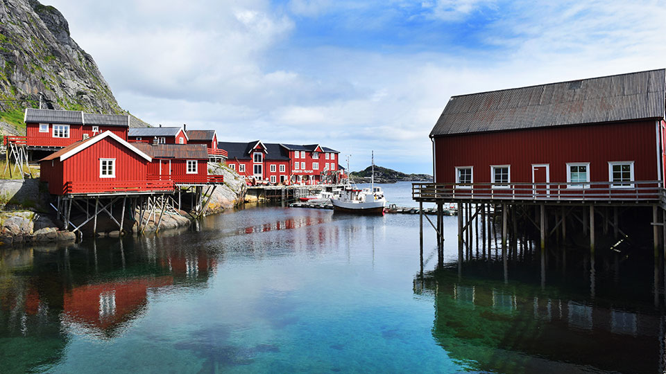
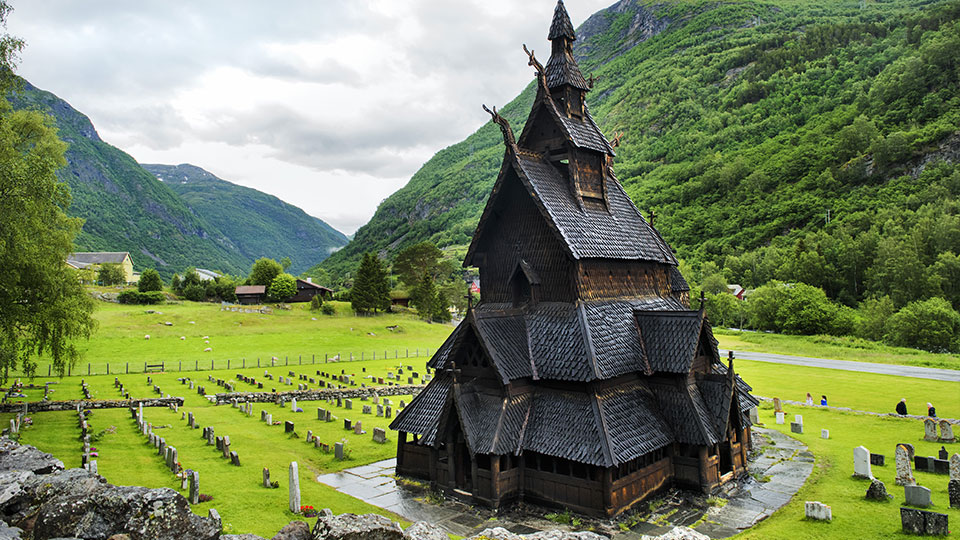
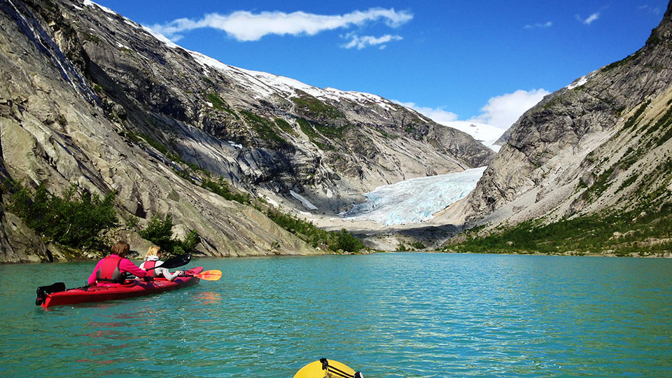
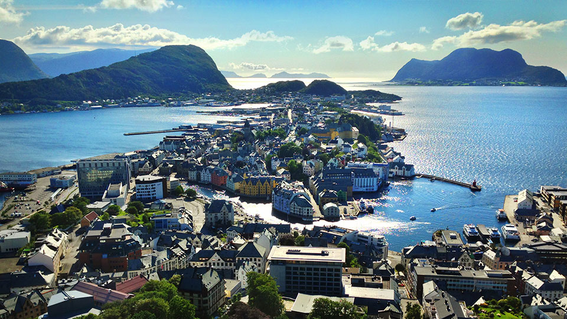
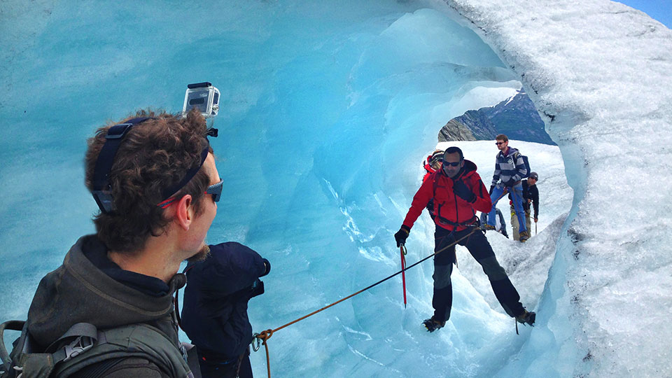
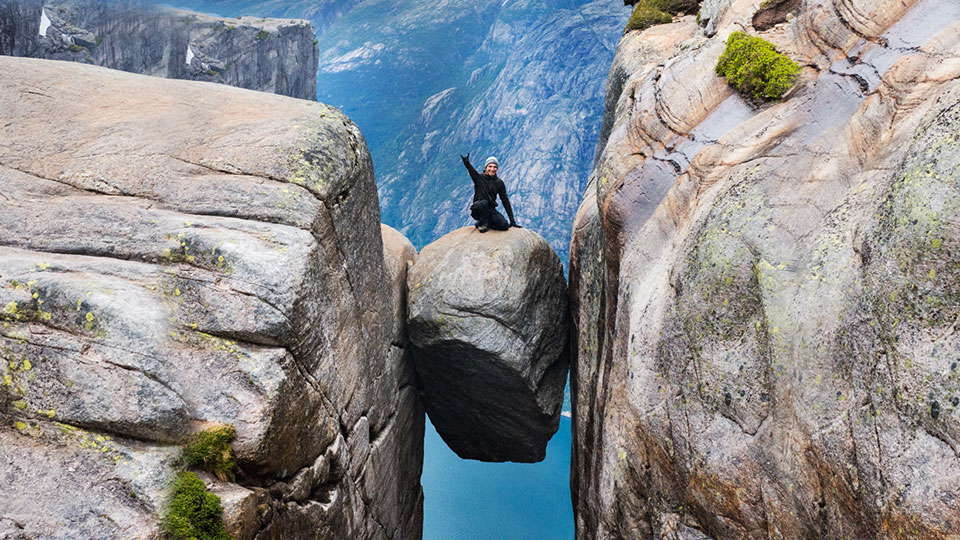
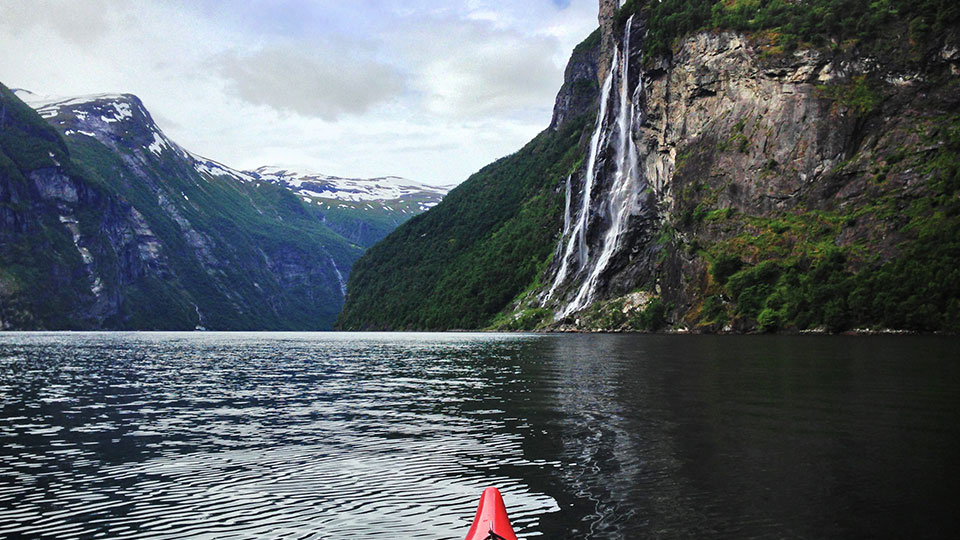

Norvège
Au pays des trolls (2016)
Synopsis
Véritable paradis terrestre, la Norvège vous émerveillera par ses paysages aux beautés irréelles, ses fjords et ses glaciers grandioses, ses routes féeriques, ses vestiges vikings, ses sites classés au patrimoine mondial de l’UNESCO, ainsi que par le charme historique et moderne de ses grandes villes. Par des aventures et des rencontres inoubliables, Mélissa et David vous feront vivre de grands moments au pays des trolls et du soleil de minuit !
Détails du projet
- Rôle : Réalisation, Caméra, Montage
- Année : 2016
- Durée : 93 minutes
- Diffuseur : Les Aventuriers Voyageurs